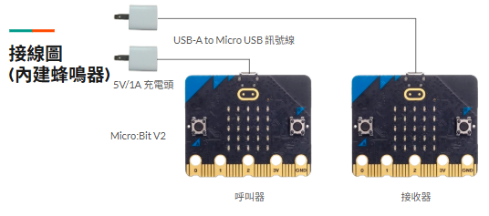

微蜂晃動叫人鈴
說明影片
微蜂晃動叫人鈴-使用情境及說明
操作說明
- 呼叫器：晃動5次進行呼叫。
- 觸發接收器。
- ※ 晃動未完整時，將會等候30秒後自動退出重新計算。
- ※ 按下呼叫器按鈕A、B可以強制關閉接收器音樂

微蜂晃動叫人鈴材料
- Micro:Bit V2 2片 (1台接收、1台傳送)
- USB-A TO Micro USB 訊號線 2條
- 5V/1A充電頭 2個
- 充電電池模組(KS B040) 2個 ※ 可選